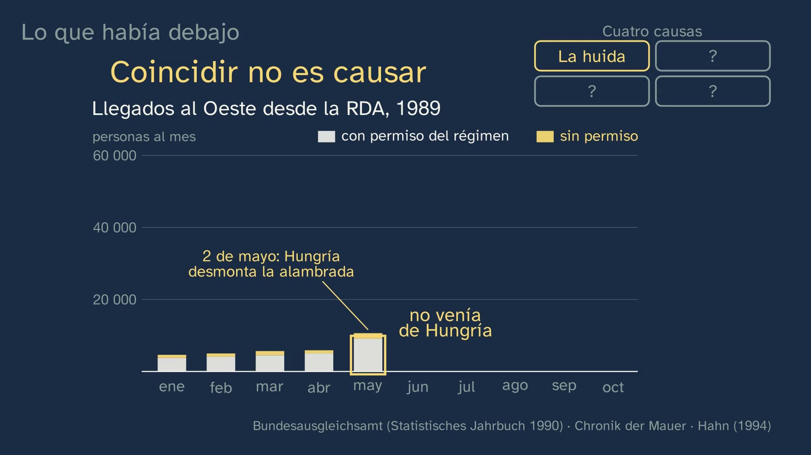
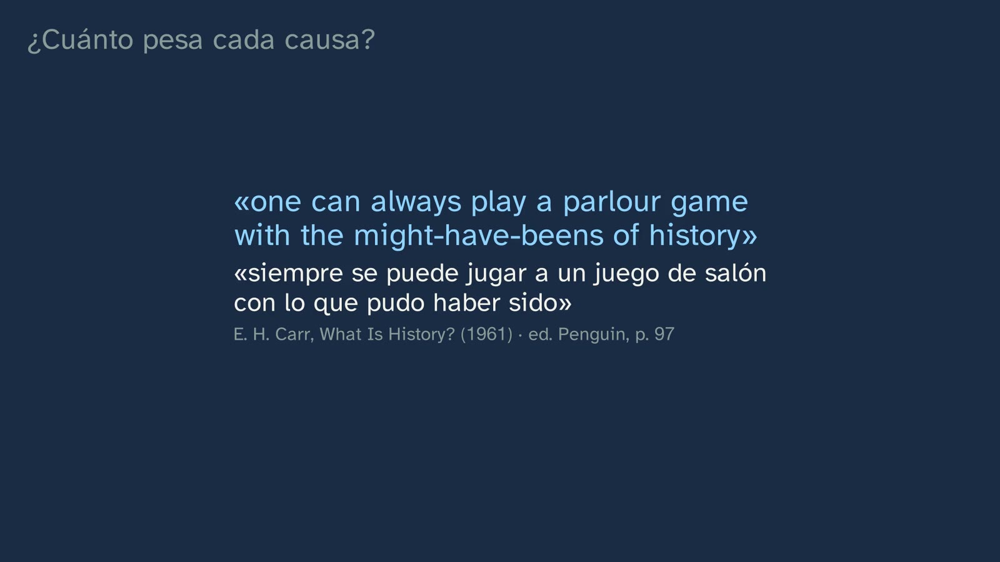

Did the Wall open by mistake?
In a nutshell
The third tool of the craft: explaining why things happen. The case is 9 November 1989. A few minutes before seven in the evening, at a live press conference, Günter Schabowski reads out a new travel regulation and, when asked from when it applies, answers "sofort, unverzüglich" (immediately, without delay). A few hours later, at the Bornholmer Straße crossing, the officer in charge opens the barrier in front of a crowd. Did the Wall open by mistake?
The class first questions the paper Schabowski read out, with the four questions from class 1, and discovers that the regime itself had decided to let people leave, with permission and a few at a time, pushed by the exodus: what it had not decided was to open the Wall that night. Then it goes down to what lay underneath, with real documents and data: the exodus (the departures of 1989, month by month, with and without permission, and the return of "coinciding is not causing" from class 2), the streets (the Leipzig demonstrations, with what the Stasi reported), the economy (the Schürer report of 30 October) and a Moscow that no longer sent in the tanks (Gorbachev in Strasbourg). With that, it names the underlying causes and the trigger (the gunpowder and the spark), takes apart the typical mistake (a single cause, or a list that adds up) with the web of causes, weighs each cause by removing it and reasoning out what would have happened without it, and resolves the bet: the mistake decided the when and the how. Sarotte and Carr make it impossible to dismiss the spark; Braudel and Sarotte leave the final question open.
Objective. By the end, students will be able to tell underlying causes from the trigger and immediate consequences from lasting ones, weigh a cause by removing it and reasoning out what would have happened without it, and explain why chance can decide the when and the how of an event.
A note on the objective. The topic's design sheet said "explain why chance sometimes decides the when, but not the why". When checking the sources we found that this thesis is disputed: E. H. Carr says that it "is to juggle with words" (What Is History?, Penguin, p. 102), and Sarotte argues that the Wall would have come down eventually, "but not necessarily in the same way". The class teaches it as a tool and presents the objection.
For readers outside Spain: the Bachillerato is the last two years of secondary school (ages 16–18). Contemporary World History is an elective in the first year of the Humanities and Social Sciences track. The video is in Spanish, with English subtitles; the images on this sheet come from the video and keep their Spanish text. The translations of Spanish and German documents (the decree, the regulation, the newspapers) are our own; English documents are quoted in the original.
Curriculum
Spain's Royal Decree 243/2022, Contemporary World History, an elective in the first year of the Bachillerato in Humanities and Social Sciences (consolidated text in the Official State Gazette, BOE, checked on 11/10/2026). Our translation of the official Spanish text. The introduction to the core knowledge asks for events to be explained "from the parameters and variables that define each historical moment and the application of the criterion of causality, essential in this discipline"; and the description of competence 1, for an understanding of "the relationship between the slower, more structural factors and the conjunctures of change". That is exactly what this class does.
| Element | What the decree says | Where the class works on it |
|---|---|---|
| Core knowledge (block A, "Societies in time") | "The historian's work: historical sources, historiography and narratives of the past. Historical argument. Significance, causes and consequences, change and continuity. […]" | The whole class: underlying causes and trigger, the web, the counterfactual; immediate, lasting and unintended consequences; and historiography (Sarotte, Hertle, Carr, Braudel, Hirschman) |
| Specific competence 1 | "To recognise the movements, actions and historical transformations that have contributed to the consolidation of freedom in the contemporary world, through the comparative study of cases and the correct use of historical terms and concepts […]" | The "Peaceful Revolution" of 1989 as a case; the concepts of underlying (structural) cause, trigger and unintended consequence |
| Specific competence 2 | "[…] through the use of reliable historical sources, the reading of historiographical texts and the development of one's own arguments that prevent the manipulation of information […]" | Its method side: primary sources (the regulation, the transcript, the report, the Stasi reports), figures that change depending on who is counting, and historiographical texts |
| Criterion 1.2 | "To understand the concepts of revolution and change in the contemporary world and the elements and factors that cause and condition them […]" | The factors that cause and condition the change of 1989; the case is neither a bourgeois nor a socialist revolution, so the class works on the conceptual side of the criterion |
| Criterion 2.1 | "[…] through the use of reliable historical sources and of cross-checked data […]" | Only its method side: cross-checked data (the two Leipzig series; the debt in the Schürer report, later revised downwards) |
What students need to bring. The four questions (class 1) and "coinciding is not causing" (class 2). From lower secondary (ESO): the Cold War and the two blocs, in broad outline (Royal Decree 217/2022, Geography and History in year 4), and the causes of the First World War, which come up in an exercise. The class gives the essentials in one minute: the two Germanys, why the Wall was built and what it cost.
Where it comes back. The collapse of the Eastern bloc regimes and the end of the USSR have their own class in topic 16 ("9 November 1989: the Wall falls and the USSR collapses"). Here the Wall is a case for learning to explain causes; there, it is the content.
How the class is built
Video chapters
About 19 minutes, in nine chapters. The class is organised as an investigation: first what happened that night, then the document, then what lay underneath, and only then the concepts (Kapur, 2008: the problem before the explanation). A causes board, at the top right, fills up with the four underlying causes, like the clue notebook in the class 2 workshop.
| Chapter | What happens | Why this way |
|---|---|---|
| What we'll see | Tristán, at his desk; the map of the topic and the night of 9 November 1989, in a Berlin split by a wall; the hook: "That evening, an East German leader gave a hurried answer to a journalist, live on air. And that same night, the Wall opened. Was it just a mistake?" | A famous event, with a question that seems to have an easy answer. |
| What you already know | On days when you see more umbrellas there are more traffic accidents: do umbrellas cause accidents? Pause. No: rain causes both. "Coinciding is not causing", which will come back. The solutions from class 2, each with its exercise restated. | Retrieving what will be needed today; closing the spaced practice. |
| The Wall in a minute | The two Germanys (1949); some 2.7 million leave for the West between 1949 and 1961, and why; Berlin as an escape route; 13 August 1961; at least 140 dead at the Wall. | The essentials for understanding the night, without anticipating topic 16. |
| The night of the mistake | The press conference; the transcript of "sofort, unverzüglich"; what "with immediate effect" meant in the East German administration; West German television reporting the border open ahead of time; Bornholmer Straße and Harald Jäger; the bet. | The story hour by hour, with the exact words (Hertle). The bet commits students to a hypothesis (White and Gunstone, 1992). |
| How do we know? The paper | The paper, questioned with the four questions; what for? (pause): to stem the exodus through Czechoslovakia. What had been decided (leaving with permission, a few at a time) and what had not (opening the Wall that night). | The method of class 1, applied to today's question. |
| What lay underneath | The exodus, with the month-by-month chart: "in May, the figure almost doubles, just when Hungary takes down the fence: was that why?" (pause), and no: in May almost everyone leaves with permission; Hungary shows in August and September. The streets (Leipzig, the slogans, 9 October, "the Peaceful Revolution"). The economy (the Schürer report, and the fact that it exaggerated the debt). Moscow (1953, 1956, 1968; Strasbourg, 1989). | Each cause with its evidence; and the students' mistake, provoked and taken apart with the data themselves (Muller et al., 2008). |
| Gunpowder and spark | Underlying causes and trigger; the spark as a chain of small mistakes. The typical mistake: a single cause, or a list. The web, "an interpretation by historians". Weighing by removing a cause (pause). The bet, resolved. Sarotte and Carr. | The concepts, once students have needed them; the counterfactual, as a tool and with its limit. |
| What came next | Immediate consequences, lasting ones (the end of the party's rule, the March 1990 elections, unification, the official demolition) and an unintended one: the regime opened up travel to regain control and hastened its own end. Summary, practice and the open question: Braudel versus Sarotte. | Consequences, also sorted by type; the open question, without a verdict (article 9). |

A plan for a 50-minute lesson
| Minutes | What to do |
|---|---|
| 0–4 | No video, the bet in writing: "If nobody had made a mistake that night, would the Wall still be standing?" Each student chooses one of the three options on the worksheet and writes why. |
| 4–14 | Video to the end of "The night of the mistake" (5:59). At the bet, pairs compare what they wrote at the start. |
| 14–24 | Video to the pause at "Was that why?" (8:12). Stop: each pair looks at the chart on the worksheet and decides whether the May rise was due to Hungary. Carry on to the end of "What lay underneath" (11:40). |
| 24–36 | Video to the end of "Gunpowder and spark" (16:07). At the "remove a cause" pause (13:41), each pair writes what might have happened in Leipzig without the Moscow cause. |
| 36–48 | The activity: "Did the Wall fall or was it opened?", with the front pages of 10 November 1989 (below). |
| 48–50 | Video to the end. The exercises, for homework. |
Typical mistakes and how they are handled
| Mistake | What the research says | How the class handles it |
|---|---|---|
| "A single thing caused it" ("Schabowski opened the Wall", "Gorbachev opened it") | Students tend to embody an event in one character, "seen as cause and main actor" (Carretero and López, 2009, p. 85); and to believe that, if no cause acts, the alternative is "a hole being left in history" (Lee, 2005, p. 49) | The two sentences, voiced as examples and crossed out: "some truth, but neither is enough" |
| "Causes are a list that adds up" | "The more causes are on the list, the more likely the event is to happen" (Lee, 2005, p. 52); in the Bachillerato, "simple causal chains" abound (Sáiz and López-Facal, 2015, p. 92) | The list dissolves into a web: causes push one another (Seixas and Morton, 2013, guideposts 1 and 2) |
| "Coinciding is causing" | It is the trap from class 2, reappearing with data | In May 1989 departures almost double just when Hungary starts taking down the fence; the two-colour chart shows that almost all were leaving with the regime's permission |
| "What happened had to happen" | Sarotte calls it the bias of hindsight: improbable events, once they have occurred, "seem inevitable" (2014, pp. xxii–xxiii and 177–178) | The bet, the counterfactual and Carr's objection: chance can change the when and the how |
| "Mistake" as the whole explanation | Single-trigger explanations hide the underlying causes | The gunpowder and the spark: without gunpowder, the spark does nothing; with plenty of gunpowder, any spark can be enough |
Questions and solutions
Stop and think (in the video)
- On days when you see more umbrellas there are more traffic accidents: do umbrellas cause accidents? (0:37) No: both are caused by a third thing, rain (rain does bring more accidents: a study by AXA with data from AEMET, Spain's weather agency, published by the DGT, Spain's traffic authority, puts the rise at more than 7% on Spanish roads; Qiu and Nixon, 2008). Coinciding is not causing: two things happening at the same time does not prove that one causes the other. If someone answers "yes", ask them what else happens on those days.
- The bet: if nobody had made a mistake that night, would the Wall still be standing? (5:59) Not corrected yet: it is resolved at 14:44. Option 1 is the worst fit with the evidence (the exodus, the streets, the economy and a Moscow that was not going to intervene left the regime very little room). Option 2 ("it would have opened anyway, without waiting many years") is the one held by historians such as Sarotte (2009: "the wall would have come down eventually, but not necessarily in the same way"; "the Wall's time was limited"). Option 3 is partly right: a counterfactual cannot be tested, only reasoned out.
- What was the paper made for? Read the first line (6:54). To stem the mass departures through Czechoslovakia ("Zur Veränderung der Situation der ständigen Ausreise von DDR-Bürgern nach der BRD über die CSSR"). What it tells without meaning to: that the regime was acting under pressure from the exodus.
- In May, the figure almost doubles, just when Hungary takes down the fence: was that why? (8:12) No: in May, 85.7% (9,115 of 10,642) left with the regime's own permission. Those escaping through Hungary show up in August (8,143 without permission) and above all in September (21,352 of 33,255, 64.2%).
- Remove the Moscow cause: what might have happened in Leipzig on 9 October? (13:41) A reasoned answer: what had happened in 1953 in the GDR itself, in Hungary in 1956 and in Czechoslovakia in 1968: armed intervention. On 9 October thousands of police and soldiers stood ready, and a letter in the party press talked of acting "weapon in hand". It is a hypothesis, and has to be presented as one.

From the student worksheet
- While you watch the video. 1) "From the moment it's published", and publication was planned for the next day. 2) To stem the mass departures through Czechoslovakia; it tells, without meaning to, that the regime was acting under pressure from the exodus. 3) It had decided to let people leave with permission, with paperwork and a few at a time; it had not decided to open the Wall that night, with no control. 4) The exodus (the departures chart), the streets (Leipzig: on 9 October, some 70,000 people, according to the Stasi too), the economy (the Schürer report of 30 October) and Moscow (Gorbachev in Strasbourg; the tanks of 1953, 1956 and 1968).
- The exodus chart. Without permission: April, 891; May, 1,527; August, 8,143; September, 21,352. In May, no: 85.7% left with the regime's own permission, so the coincidence with Hungary proves nothing (coinciding is not causing). The Hungarian border shows above all in September (64.2% without permission), the month in which Hungary opened it to East Germans (on the 11th).
- Underlying cause, trigger or consequence? 1) U (the exodus). 2) T. 3) U (Moscow; the statement is the evidence). 4) I. 5) L. 6) U (the economy; the report is its evidence, and what the leadership believed). 7) T. What teaches most: 3 and 6, because a document is not the cause, but its evidence.
Practice (the solutions open class 4)
- Sarajevo, 28 June 1914: underlying cause or trigger? Trigger: the assassination of Archduke Franz Ferdinand by Gavrilo Princip, a 19-year-old Serb student from Bosnia, sets off the crisis; a month later (28 July), Austria-Hungary declares war on Serbia. Underlying causes covered in lower secondary (ESO): imperialism and rivalry between the powers, the alliance systems, the arms race and nationalism (Imperial War Museums; bpb). Criterion: that students do not just say "trigger", but why (it explains when, not why).
- A front page from 10 November 1989. Open-ended. Criteria: the four questions, with their answers and the mark of how each one is known; which cause the newspaper highlights (the government's decision, pressure from the people, Gorbachev…); and something it tells without meaning to (the headline's verb: "cae" (falls), "abre" (opens), "derribar" (tear down) in quotation marks). See the activity.
- Remove the opening of the Hungarian border: what changes and what does not? Open-ended. A good answer: without Hungary, the summer exodus would have been smaller and the pressure on the regime would have come another way (the embassies in Prague and Warsaw, the streets, the economy and Moscow's stance were all still there); perhaps later, perhaps differently. And it presents this as a hypothesis, not as a fact.
Keep thinking. What moves history: great forces or particular people? It has no textbook answer. Some pointers for the debate, without closing it: Braudel (events are "dust" on the slow movement of history) and Sarotte (significant events "do not always happen for significant reasons"); Maier, who gives weight to long-term conditions but also to the collective action of East Germans; Seixas and Morton: events result from the interplay between actors and conditions. The teacher moderates and does not give a verdict.
A classroom activity: did the Wall fall or was it opened?
Duration: 12 minutes. Materials: the front pages of 10 November 1989 (projected or printed from the links). Outside Spain, the same activity works with front pages of 10 November 1989 from any country's press.
- In groups of three, each group gets one front page:
- ABC (Madrid): "CAE EL MURO DE BERLÍN" ("THE BERLIN WALL FALLS") — https://www.abc.es/archivo/periodicos/abc-madrid-19891110.html
- La Vanguardia: "La RDA abre el muro que divide Alemania" ("The GDR opens the wall that divides Germany") — https://hemeroteca-paginas.lavanguardia.com/LVE08/HEM/1989/11/10/LVG19891110-001.pdf
- Diario de Burgos: "Virtual 'caída' del muro de Berlín con la apertura de fronteras" ("Virtual 'fall' of the Berlin wall with the opening of the borders") (Biblioteca Virtual de Prensa Histórica) — https://prensahistorica.mcu.es/es/catalogo_imagenes/grupo.do?path=1000471858&presentacion=pagina&posicion=1®istrardownload=0
- El Informador (Guadalajara, Mexico): "Alemania Oriental decidió abrir el Muro de Berlín" ("East Germany decided to open the Berlin Wall") — https://hndm.iib.unam.mx/consulta/publicacion/visualizar/558075be7d1e63c9fea1a303?pagina=1&anio=1989&mes=11&dia=10
- El Tiempo (Bogotá): "Se derrumba definitivamente la 'Cortina de Hierro'" ("The 'Iron Curtain' collapses for good") — https://news.google.com/newspapers?nid=N2osnxbUuuUC&dat=19891110&printsec=frontpage&hl=es
- Each group asks its front page the four questions and answers: what verb does the headline use? Who acts in it: the government, the people, nobody? Which cause does it give most weight to?
- Pooling on the board: the verbs in one column ("cae", "abre", "'caída'", "decidió abrir", "se derrumba": falls, opens, "fall", decided to open, collapses). Which one best describes what happened that night, given what the class has shown? Why does one newspaper put "caída" (fall) in quotation marks?
- Wrap-up: none of them lies, but each verb is an interpretation. Written in the small hours of that same night, none of them yet knew the chain of mistakes that historians reconstruct today. A primary source tells what was known, and believed, at the time.
Oral-source variant: ask someone in the family who was an adult in 1989 where they were when they heard the news and what they understood had happened.
Open resources
Checked on 11/10/2026, free and without registration unless stated otherwise.
| Resource | What it offers | Link |
|---|---|---|
| RTVE, archive | Telediario 2 of 10-11-1989, "La caída del Muro un día después" (the fall of the Wall, a day later; 15 min); Informe Semanal of 11-11-1989 (Spanish public television, in Spanish) | https://www.rtve.es/play/videos/fue-noticia-en-el-archivo-de-rtve/dia-despues-caida-del-muro-berlin/618998/ |
| ABC, newspaper library | Every page as a PDF, for 10 and 11-11-1989 | https://www.abc.es/archivo/periodicos/abc-madrid-19891110.html |
| La Vanguardia, newspaper library | The front pages of 10-11 ("abre", opens) and 11-11 | https://hemeroteca.lavanguardia.com/edition.html?fecha=1989-11-10&edicion=LVG |
| Biblioteca Virtual de Prensa Histórica (Spain's Ministry of Culture) | Five Spanish provincial dailies from 1989, with text search | https://prensahistorica.mcu.es |
| Hemeroteca Nacional Digital de México (UNAM) | The complete El Informador of 10-11-1989 | https://hndm.iib.unam.mx |
| Chronik der Mauer (bpb, Deutschlandradio and ZZF) | The night hour by hour, in German and English; the regulation, the transcript and the audio of the press conference | https://www.chronik-der-mauer.de/en |
| Making the History of 1989 (George Mason University) | Primary sources translated into English, and teaching modules | https://1989.rrchnm.org/ |
| Europeana 1989 | Objects and testimonies from 1989 (the link opens the Spanish interface) | https://www.europeana.eu/es/galleries/10827-europeana-1989 |
| LeMO (Haus der Geschichte) | Schabowski's original note, with its transcription | https://www.hdg.de/lemo/bestand/objekt/dokument-notizzettel-schabowski.html |
| Stasi-Mediathek | Stasi documents, including on 1989 (non-commercial use) | https://www.stasi-mediathek.de/ |
For teachers: what does not fit in the video
- Who asked "from when?" It was not Riccardo Ehrman (ANSA): he asked whether the draft travel law had been a mistake. "Ab wann?" was shouted by Krzysztof Janowski and Peter Brinkmann; the question that prompted the "sofort" is attributed to Ralph T. Niemeyer only on the strength of his own statement (Hertle, transcript in Chronik der Mauer, note 1). That Ehrman was tipped off (by Günter Pötschke, of the ADN news agency) is plausible, but not proven. It is a good example of "what is told" versus "what is known".
- "Wir fluten jetzt!" ("Now we flood!"), which is often put in Jäger's mouth, was said, according to Hertle, by another deputy head, Edwin Görlitz. What Jäger said on the phone was: "Es ist nicht mehr zu halten, wir müssen die GÜSt aufmachen".
- The "safety-valve solution". At around 21:20, on his superior's orders, at Bornholmer they let the most insistent people out and stamped their ID cards half over the photo: they were being expelled without knowing it. Jäger let the first ones who came back return, because they had their children at home (Hertle).
- The debt. The Schürer report gave 49 billion foreign-currency marks; later, the Bundesbank calculated a considerably lower net debt (Hertle, "Totalschaden", bpb, 2018, note 48; Brenke, 2009, p. 19: "the GDR was not insolvent in 1989"). Hertle and Volze add that, even so, the threat of default remained. The class says it in one sentence: what moved the leadership was what it believed.
- General Niebling. In an interview with Hertle (1998), the Stasi general Gerhard Niebling recalled what was said when the draft was reviewed: "Hier geht es nicht um den Wegfall der Grenze, nicht um den Abriß der Mauer" ("This is not about doing away with the border, nor about tearing down the Wall"). It is a single-source memory; that is why, for the unintended consequence, the class uses the title of Hertle's book.
- The counterfactual, disputed. Carr called imagining what might have happened "a parlour game" (What Is History?, Penguin, p. 97); Seixas and Morton use it as a tool ("Alter a single action or condition, and an event might have turned out differently", guidepost 5). The class presents it as a tool and says that some historians distrust it.
- The fashionable single cause: Reagan's speech ("Mr. Gorbachev, tear down this wall!", 12-6-1987). Sarotte rejects the idea that the opening was the result of an agreement between Reagan and Gorbachev (2014, p. xix). Useful for the typical mistake, without caricaturing anyone.
- The Leipzig figures. The Stasi systematically counted fewer people (3,500 on 25 September, against 5,000–8,000; on 9 October, the Leipzig office said 50,000–60,000 that night, and headquarters about 70,000 the next day). For 16, 23 and 30 October, its figures are weekly ones. The video's chart leaves out the doubtful ones.
- Exodus and protest, together. Albert O. Hirschman, the economist of the "exit and voice" pair, wrote that in the GDR of 1989 "exit (outmigration) and voice (protest demonstrations against the regime) worked in tandem and reinforced each other" (World Politics 45(2), 1993, p. 177). In 1989 the exodus spurred the protest ("Wir bleiben hier!"). Hirschman also argued that earlier, from 1949 to 1988, exit and voice had got in each other's way; with data from 1970 to 1989, Kohler and Krawietz (KZfSS 78(3), 2026, p. 926) reject that first half, and do not dispute the 1989 one. Useful for the web of causes, and for a debate on how a thesis is put to the test.
- An unintended consequence, in a title. Hertle titled his 1996 book Der Fall der Mauer: Die unbeabsichtigte Selbstauflösung des SED-Staates ("The Fall of the Wall: The Unintended Self-Dissolution of the SED State"): nobody in power planned or wanted the opening (p. 299).
- Why Hungary. East Germans could go on holiday to Hungary and Czechoslovakia (to Hungary, with a permit for each trip); to the West, almost never. In March 1989, the Hungarian prime minister Miklós Németh told Gorbachev that they were going to remove the barriers on their border, and Gorbachev did not object (record of 3-3-1989, National Security Archive).
To find out more
- H.-H. Hertle, Sofort, unverzüglich. Die Chronik des Mauerfalls (Ch. Links, 2019), excerpted chapter by chapter in Chronik der Mauer.
- M. E. Sarotte, The Collapse: The Accidental Opening of the Berlin Wall (Basic Books, 2014).
- P. Seixas and T. Morton, The Big Six Historical Thinking Concepts (Nelson, 2013), "Cause and Consequence": https://historicalthinking.ca/cause-and-consequence
Sources
Every fact, with its sources and its verbatim quotations, is in the class's verification record (in Spanish).
- Royal Decree 243/2022, consolidated text (BOE, in Spanish): https://www.boe.es/buscar/act.php?id=BOE-A-2022-5521
- Rain and accidents: "La siniestralidad en las carreteras aumenta más de un 7 % los días de lluvia" (road accidents rise by more than 7% on rainy days; Centro de Estudios Ponle Freno-AXA, with data from AEMET; Revista DGT, 3-2-2017, in Spanish): https://revista.dgt.es/Galerias/noticia/nacional/2017/02FEBRERO/estudio_moteorologia.pdf · L. Qiu and W. A. Nixon (2008), Transportation Research Record 2055, pp. 139–146: https://doi.org/10.3141/2055-16
- The regulation of 9-11-1989 (BStU, MfS, AB Neiber 553, Bl. 15-19): https://www.chronik-der-mauer.de/material/180400/ · the transcript of the press conference (Hertle): https://www.chronik-der-mauer.de/material/180619/
- Hertle, chapters of Sofort, unverzüglich in Chronik der Mauer (9:00, 12:00, 15:30, 17:30, 18:00, 19:00–20:15, Bornholmer Straße, Checkpoint Charlie, Brandenburger Tor) · H.-H. Hertle, Der Fall der Mauer: Die unbeabsichtigte Selbstauflösung des SED-Staates (Westdeutscher Verlag, 1996)
- Departures in 1989: Statistisches Bundesamt, Statistisches Jahrbuch 1990, p. 74 (Bundesausgleichsamt); monthly series in Chronik der Mauer; A. Hahn (1994), pp. 29–30
- Leipzig: MfS, ZAIG 452/89 (Bundesarchiv, DDR im Blick der Stasi 1989); Chronik der Mauer; bpb; Archiv Bürgerbewegung Leipzig · Leipziger Volkszeitung, 6-10-1989
- Schürer report, 30-10-1989, section IV: Bundesarchiv, DY 30/J IV 2/2A/3252 (transcriptions in Chronik der Mauer and bpb)
- Gorbachev at the Council of Europe, 6-7-1989 (CVCE) · bpb, Deutschland-Chronik, 7-7-1989 · Németh–Gorbachev conversation, 3-3-1989 (National Security Archive)
- A. O. Hirschman (1993), "Exit, Voice, and the Fate of the German Democratic Republic", World Politics 45(2), p. 177
- M. E. Sarotte, The Washington Post, 1-11-2009; The Collapse (2014), pp. xix, xxii–xxiii, 177–179
- E. H. Carr, What Is History? (1961; Penguin, 1990), pp. 97 and 102 · F. Braudel, La Méditerranée (2nd ed., 1966), vol. II, p. 223
- P. Lee (2005), in How Students Learn: History in the Classroom (NRC), pp. 34–35, 49 and 52 · M. Carretero and C. López (2009), Enseñanza de las Ciencias Sociales 8, p. 85 · J. Sáiz Serrano and R. López-Facal (2015), Revista de Estudios Sociales 52, p. 92
- Stiftung Berliner Mauer, and Hertle and Nooke (2017): at least 140 dead · bpb: the official demolition, 13-6-1990 · Bundestag and bpb: the elections of 18-3-1990 and unification on 3-10-1990
- Images: Bundesarchiv (Bild 183-1989-1109-030, 183-85458-0002, 183-1990-0922-002; CC BY-SA 3.0 DE); Sue Ream (CC BY 3.0); the course of the Wall and the outline of East Berlin (its present-day districts): Geoportal Berlin (dl-de/zero-2-0); border crossings: Wikidata (CC0); maps: Natural Earth (public domain)
About this class
Script written by an AI (Claude, by Anthropic), with an independent review and every fact checked in two sources or in the original; a person approves it. Tristán is an illustrated teacher with a synthetic voice. This English version was translated by the same AI and reviewed by a person. This sheet is published under a CC BY 4.0 licence: it can be used, copied and adapted, crediting GinCol Lab.
How to cite this sheet
GinCol Lab (2026). Did the Wall open by mistake? GinCol Lab teacher sheet: Contemporary World History · 1st year of Bachillerato · The historian's craft · Class 3 of 6. https://gincollab.github.io/aula/en/historia-mundo-contemporaneo/t01-c3/. CC BY 4.0.
GinCol Lab teacher sheet · CC BY 4.0 · Source and errata